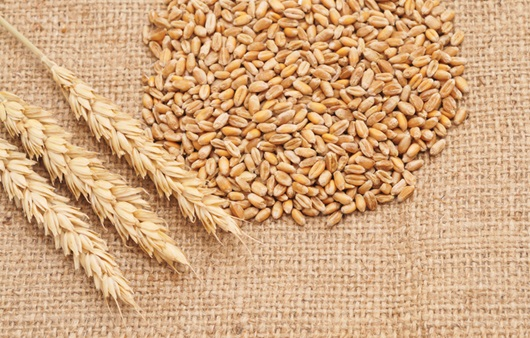

농작물 명칭: 보리wheat
재배 및 생산 특성garden_cart
- 품종: 강한 품종 : 서둔찰보리, 대백보리, 낙영보리, 새강보리, 새알보리, 미락보리, 큰알보리 중 정도 품종 : 밀양겉보리, 대진보리, 찰보리, 새올보리, 알찬보리, 탑골보리, 강보리, 올보리 약한 품종 : 오월보리, 알보리
- 재배 환경: 보리재배에 적합한 토양은 사양토~식양토 입니다. 토심은 100cm가 양호하며 토양의 pH는 7.0~8.0이며, 5.5이하에서는 생육이 떨어집니다. 보리는 산성 토양에 극히 약하며 쌀보리는 겉보리보다 더욱 약하나 알칼리성 토양에서는 잘 견딥니다.
유통 구조 설계
생산자(농가) → 산지 유통인/생산자 단체 → 도매시장(도매법인) → 중도매인 → 소매업체 및 소비자
- 물류 방식: 수확 및 이송 후 건조 가공(도정) 등 일을 마치고 포장 및 배송
- 판매 전략 1. 타겟 맞춤형 제품화 (Segmentation)건강 중시형: 식이섬유와 베타글루칸이 풍부한 점을 강조하여 다이어트식 및 당뇨 예방식으로 마케팅합니다. 편의성 중시형: 1인 가구를 겨냥해 바로 쪄먹는 '보리 햇반'이나 간편 보리 선식 등 가정 간편식(HMR) 형태로 개발합니다.